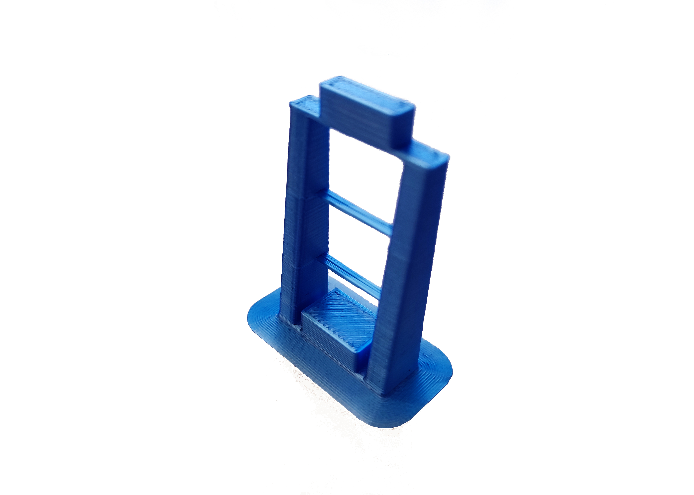

Print the plastic parts
Tools
- 1 Precision wire cutter
- 1 RepRap-style printer
- 1 Utility knife - Not a scalpel!
Materials
- 50 g of Black PLA filament
- 205 g of PLA filament - Of any colour you want
Step 1: Set your printer settings
Almost all station parts can be printed out of PLA filament on most RepRap-style printers.
We recommend the following printer settings:
| Setting | Value |
|---|---|
| Material | PLA |
| Material Temperature | Recommended by the PLA brand |
| Layer height | 0.2mm or less |
| Infill | Printer default |
| Brim | Recommended for all parts |
| Slice gap closing radius | 0.001mm |
Test whether your printer can print the pieces for this station or other open-source designs. Download and print the leg test file. This will only use about 5 grams of PLA.
The result should look like this (this has been printed with a brim):

As a general rule, strength is more important than surface finish, so very thin layers (less than 0.15mm or so) are unlikely to result in a station that performs any better, though it may approve the appearance.
Step 2: Printing
Now you have tested your 3D printer and filament you can print the following parts:
- Actuator assembly tools (nut tool, band tool, and band tool cover): actuator_assembly_tools.stl
- Focusing assembly: focusing-assembly.stl
- Actuator Foot: z_foot.stl
- Thumbwheel: thumbwheel.stl
- Pi camera platform: camera-platform.stl
- Lens spacer: lens-spacer.stl - This must be printed in black!
- Illumination base: illumination-base.stl - This must be printed with support
- Illumination slider: illumination-slider.stl
- Illumination thumbscrew: illumination-thumbscrew.stl
- Illumination arm: led-arm.stl - This must be printed with support
- Hinge pin: arm-pin.stl
- LED cover: led-cover.stl
- Standoff-S: standoff-S.stl
- Standoff-M: standoff-M.stl
- Foot-M: foot-M.stl
- Spacer-S: spacer-4mm.stl
- Spacer-M: spacer-11mm.stl
In case you want to print the plates instead of laser cutting them: top-plate.stl, middle-plate.stl, and bottom-plate.stl
You can download all the STLs as a single zipfile (plates are not included).
Step 3: Clean-up of printed parts
Be careful when removing brim
To avoid injury, first remove the bulk of the brim without a knife. Remove the remaining brim with a peeling action as described below.
Carefully remove the printing brim from all parts. To remove brim:
- Use precision wire cutters to remove most of the brim from the part.
- Clean up the remaining brim with a utility knife:
- Hold the knife in your dominant hand with 4 fingers curled around the handle, leaving your thumb free.
- Hold the part in your other hand, as far away from the surface, to be cut as possible.
- Support the part with the thumb of your dominant hand.
- Place the blade on the surface to be cut, and carefully close your dominant hand, moving the blade, under control, towards your thumb.